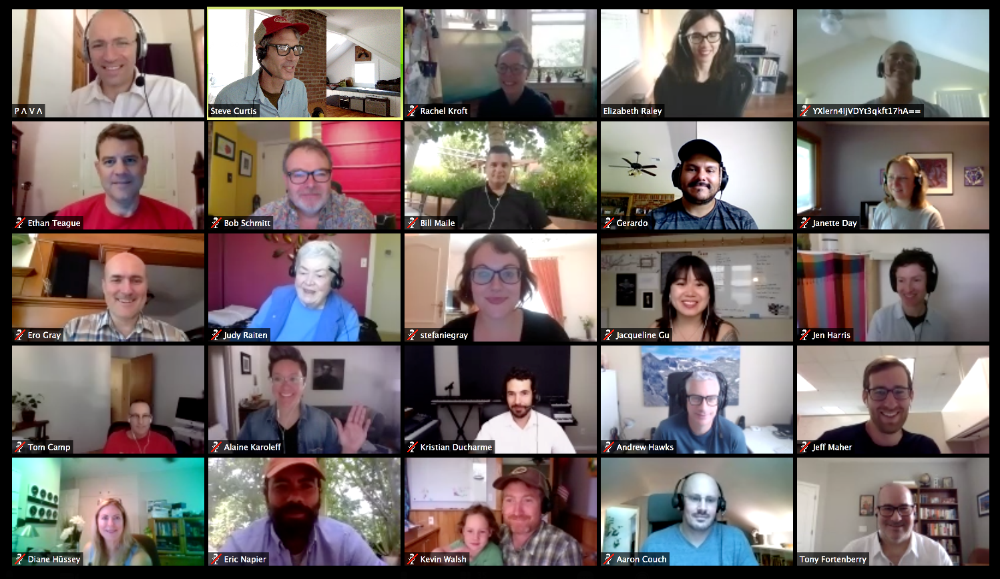

A group of us at CivicActions recently sat down to hold a frank discussion about life as part of a distributed team (and by sit down, I mean remotely, on a video call. And I mean too that several of us were actually standing). What did each of us find marvelous or fulfilling about this arrangement for our work? In what ways did this arrangement fall far short of marvelous or fulfilling? And how could we, as individuals or as a distributed organization as a whole, work to make this arrangement better for everyone?
The group was a diverse bunch. Some had worked for CivicActions for years and had only distant recollections of any other work scenario, whereas others had recently come from other offices, and found themselves somewhere between heady enthusiasm and real disorientation in their new setup.
Two underlying points helped set the context for our conversation, and they are important to share here as well.
First, CivicActions is almost entirely distributed — we work from dozens of ‘home offices’ across the globe and from a few onsite client locations. This arrangement is primarily rooted in support of employees’ “work / life balance”, in whatever way this may be individually understood, but the distributed team also helps support excellence (being able to seek the best talent, regardless of location) and efficiency (eliminating certain constraints of infrastructure and location from company overhead and employees’ workdays).
And secondly, everyone at CivicActions works hard to raise the fidelity of our communication, in light of this distribution. This comes to mean many things, some of which are discussed below, but at a minimum, it means a default to video for every call, a commitment to in-person meetings at certain times, and an overall mindful attention to “process” of all sorts.
So, what did people have to say? What observations did this conversation stir up? Here’s a plain list, highlighting some of the many points that arose:
What I like about being part of a distributed team:
- Flexibility over my schedule, and all that comes with this. Higher than basically anything else, we ranked the ability to spend time with family or friends, or to engage with other non-work projects. At its core, this is an ability to slow down when life requests or requires it, and then make this time up later, when able, and people found this to be golden.
This is an ability to slow down when life requests or requires it, and then make this time up later … and people found this to be golden.
- The ability to focus. We can create our own ideal workspace, cut out the clutter and the noise, and get to work.
- No commute. The environmental and quality-of-life upside here is tremendous, making this another lead factor in people’s happiness.
- Heightened attention to our communication, tools, processes. The fact that our communication and processes must be excellent, to make up for the challenges of not being side-by-side, has the tendency to make our communication and processes excellent, or at least to encourage strivings in this regard. The ripple effects of this permeate all of the work that we do.
What I don’t like about being part of a distributed team:
- The tendency to let work dribble into all other hours and aspects of our lives. Without the pack-up and go from the office, it’s harder to shut down, and several of us struggle with keeping our attention to work at bay.
Without the pack-up and go from the office, it’s harder to shut down, and several of us struggle with keeping our attention to work at bay.
- Less natural and unstructured “osmosis” between colleagues. We feel this both in the sense of sharing professional or technical learnings, and in the sense of simply getting to know one another.
- Simple logistics of coordination and communication are occasionally challenging. A crummy internet connection, kids’ noise in the background, time zone differences — all can add to fundamental communication difficulties stemming from the basic fact that, however great our tools may be, we’re not all in the same room together.
- Isolation and “the grind”. If you’re just moving from bed to shower to desk to fridge and back again, that packed commuter train and those perfunctory watercooler conversations can actually start to look pretty good in retrospect. And, absent small bits of interaction and human randomness, an 8-hour work day can feel reaaaallllly long.
Things that we might try, as individuals or an organization, to make our distributed workplace experience better:
For starters, efforts to make our collective experience enjoyable and our work effective are at the very heart of CivicActions; they’re the most basic “whats” and “hows” of our work. Our emphasis on transparency and openness, our culture of rich connection, our practices of clear and simple communication, all emanate from these fundamental efforts, radiating to every aspect of our work together. The conversation here dug beyond broad discussions of ethos, however, and suggested the following very particular, very concrete ideas:
- Keep calendars up to date with all relevant work and non-work events. Our work calendars are visible to all in the organization, and they should not only display when we have a scheduled meeting, but also when we expect to be away from our desk to pick up a child from school, or see the dentist, or anything. If we’re careful about communicating this information, we’re all considerably more reliable in our accessibility to one another.
If we’re careful to communicate both work and non-work calendar information, we’re all considerably more reliable in our accessibility to one another.
- Strengthen our practice of on-site and group meetings. We gather in subgroups for conferences throughout the year, gather for company retreats at least once a year, and generally hold on-site visits for project kickoffs. But being more proactive about local and regional gatherings is an attainable means toward stronger group bonds. And an insistence on on-site kickoffs, as we scope and budget new work, not only helps us forge meaningful connections with our clients, it also allows for much higher fidelity discussion in the crucial early mapping phases of a project.
- Unlearn what we’ve learned about muting during calls. We’ve all heard, and likely uttered, the refrain “everyone please mute when you’re not talking” during conference calls. But unless you’re washing dishes, or on the sidewalk, why should it matter? (hint: a good headset makes it matter a lot less). On group calls, even video calls, it’s often easy to drift into silence, and the mute button can become one little step in greater drift toward non-participation. If the assumption is that everyone intends to take part in the call, maybe experiment with everyone really being in the call, unmuted and able to speak up when so moved, just as they would be in a room together.
On group calls, it’s often easy to drift into silence, and the mute button can become one little step in greater drift toward non-participation.
- Stipends for, or group membership to, co-working spaces for those interested? Stipends for home office needs that support communication? Want everyone on the team to have a good reliable headset for video calls? Want some support in getting out of the home a few days a week to a co-working space? These items are currently under consideration at CivicActions.
Our conversations offered a good analysis of the ways we interact with one another on a daily basis, as well as an interesting discussion of how the simple fact of our distribution affects so much about the ways that our work and non-work lives interact.
I’ll leave you with one observation from our retrospective that I found particularly interesting:
One co-worker asserted that, in some ways, we know each other better than we would in a traditional work environment, because we have constant windows into each other’s home and non-work lives. True, I know what sort of art my co-workers have on their walls. I see their kids’ Lego towers, or hear their dogs getting antsy for a walk. I know what the skyline looks like from their parents’ back porch (and roughly how strong the WiFi is back there). Our Slack instance features channels dedicated to discussions of music, family, art, health—the list goes on—all of which lead to interesting and sometimes personal discussions about how we see the world, or how we see ourselves in it. And now when we see our “remote” colleagues at meetings, they feel like really close friends, because they are.
When we see our “remote” colleagues at meetings, they feel like really close friends, because they are.
I don’t know if these bonds are more or less substantial than those between co-workers in a typical office; that’s up for debate and basically irrelevant. The point is that certain collaboration tools and processes, when used in a thoughtful way, can have a tremendous impact on both the “quality of life” and the “quality of work” on a distributed team. And the other point is that, if we’re careful about how we build our days, there’s an awful lot to love about the distributed model.